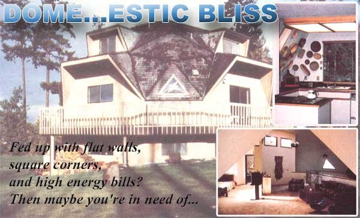
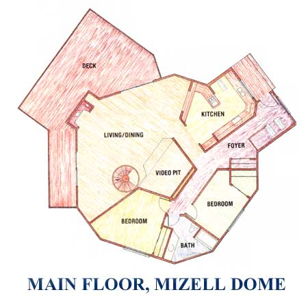

Issue # 83 - September/October 1983
More than 30 years ago, R. Buckminster Fuller (see the memorial on page 82) received a patent for a system by which spherical structures could be formed from interconnecting triangles. Fuller's development mimicked certain geometric solids that occur commonly in nature and were described long ago by the Greeks. Old ideas, perhaps, but the synthesis of these concepts into a modern building system offers some revolutionary advantages over conventional, rectilinear construction.
The term geodesic-which literally means "great circle" has been familiar to cartographers (mapmakers) for centuries as the word for the shortest distance between two points on the surface of a sphere. In itself, the word does little to describe a dome shell's system of imitating great circles with interconnected straight lines ... all of which are triangulated to give the building tremendous strength.
Actually, several factors help increase the integrity of a dome. The quasi-round shape transmits loads evenly through the structure and to the foundation, while the fundamental three-sided framework makes use of the strongest and simplest method of connecting structural members. Then gravity pulls the dome together, placing all the parts in compression (and thereby taking advantage of the direction of greatest strength in most materials).
A dome has so much inherent structural integrity that it requires substantially less material than does a cubic structure. (A light truck can haul the parts of a 35-foot-diameter unit to the building site ... in one load.)
A geodesic structure is also more thermally efficient than a rectilinear building with the same insulation and square footage. (Depending on how the interior is utilized, a dome may have 30% less skin exposed to the elements than would a conventional house of similar size.) And the polygons of the shell-designers use various combinations of equilateral triangles-can all be built from conventional, linear materials!
Many owner-builders have also recognized that-though the fancy geometric patterns on a dome may look intimidatingly complicated-geodesic structures are actually quite easy to build. The lengths and angles of the polygons all break down into a few essential shapes, and the framing can be prepared in advance. So, once all the framework and joints have been cut, domes are often built in a day.
Of course, whatever the theoretical technical advantages of geodesics may be, most people who live in domes do so because they enjoy the experience of being inside a spherical building. There are probably just about as many explanations for why such formations are pleasant to be in as there are people who live in the unconventional dwellings. Indeed, there's little question that as Fuller-the creator of geodesic structures?is considered to be a futurist, so the dome is bound to increasingly be one shape of things to come.
To give you an idea of some of the possibilities offered by geodesic domes, we've arranged to provide a peek at (and into) a particularly attractive and ambitious one: Ken Mizell's dwelling, built by Dome Homes, Incorporated of Bellevue, Washington. Roger Clark's photographs tell the story better than we ever could, but we couldn't resist sharing some of the specifications that Roger passed on to us.
The three-storied Mizell dome, built over a full, finished basement with all-weather wood walls, encloses 4,400 square feet of living area ... all within a rough circle with a diameter of only 45 feet! The geodesic arrangement consists of pentagons and hexagons formed from 60 triangles ... but it doesn't extend all the way to ground level. Rather, the dome is perched on a "riser wall" that helped the designers achieve a successful combination of diameter and ceiling height.
The five-bedroom home is warmed by a heat pump and two woodburning fire places, and its owner claims that these appliances are never hard-pressed to keep the interior cozy. The cost of this spacious, energy-efficient home?a fully contracted $150,000?is comparable to that of standard "box" buildings in the area.
Naturally, there's a wide range of prices and styles available to the prospective "dome owner" of today. So we've prepared a list of kit manufacturers to help you pick the style of geodesic living that may be just right for you!
American Geodesics, Incorporated
Dept. TMEN
2001 Outer Hammond Street
Bangor, Maine 04401
AGI offers dome kits and completed structures in Maine, but brochures ($3), a plan set ($15), and blueprints/loadtest data ($90) are available nationwide.
Cathedralite Domes, Incorporated
Dept. TMEN
P.O. Box 1105
Medford, Oregon 97501-0081
Cathedralite offers a variety of dome kits. A brochure with a price list is available for $6. 00.
Geodesic Dome Manufacturing
Company, Incorporated
Dept. TMEN
P.O. Box 787
Plattsburgh, New York 12901
GDMC's planning package with a price list for kits and plans costs $4. 00.
Geodesic Domes, Incorporated Dept. TMEN 10290 Davison Road Davison, Michigan 48423 or Dept. THEN Route 1, Box 257C Ponchatoula, Louisiana 70454
You can send $8.00 to the GDI nearest you for a planning guide and a price list of the company's kits and plans.
Hexadome of America,
Incorporated
Dept. TMEN
47 Heritage Square, Box 2351
La Mesa, California 92041
Hexadome sells a kit for a 24-triangle structure.
R.K. Maynor Company
Dept. TMEN
P.O. Box 2845
Missoula, Montana 59806
Information about the R.K. Maynor Company's offerings is available for $1.00.
Monterey Domes
Dept. TMEN
1760 Chicago Avenue, Box 55116
Riverside, California 92517
Monterey offers a catalog packet for $6.00. The company's assembly manual is available for $5. 00.
Polydome Incorporated
Dept. THEN
3010 North Park Way
San Diego, California 92104
Information on Polydome kits is available for $5. 00..
Puna Domes, Incorporated
Dept. THEN
P. 0. Box 199
Oxford, Massachusetts 05140
The company's booklet is available for $4.95. A two-foot Puna Dome model costs $5.95.
Synapse Domes, Incorporated
Dept. TMEN
P.O. Box 554
Lander, Wyoming 82520
The Synapse Dome kit information packet costs $6.00.
Timberline Geodesics,
Incorporated
Dept. THEN
2015 Blake
Berkeley, California 94704
The price of the Timberline catalog is $5.00.
TOP Domes
Dept. TMEN
5955 Otter View Circle
White Bear Lake, Minnesota 55110
TOP offers dome kits and models. Send $6. 00 for their literature package.
|
 PHOTOS BY ROGER CLARK |
 |
|